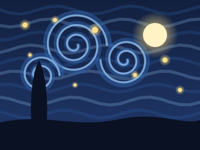
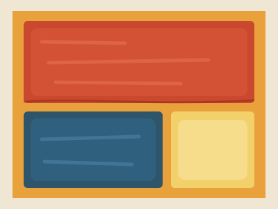
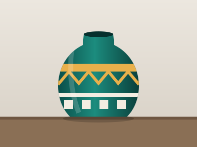
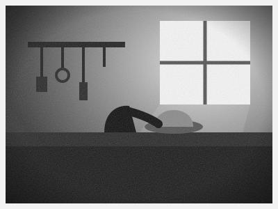
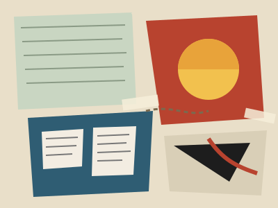
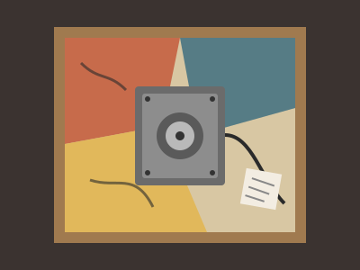

Materias visibles
Muestra colectiva de marzo a junio. Materias visibles reúne pintura, cerámica, fotografía y collage de cuatro artistas de la ciudad.
Cada obra muestra un material distinto y la forma en que cada artista lo trabaja: óleo y acrílico de Renata Salas, cerámica esmaltada de Tomás Vega, fotografía analógica de Ingrid Moreau y collage y técnica mixta de Julián Ferreyra.
Usá los botones para filtrar por técnica y hacé click en cada obra (o en su nombre en el listado) para verla más grande.
Obras en sala

2024 - Óleo sobre tela - Renata Salas

2023 - Acrílico sobre tela - Renata Salas

2023 - Cerámica esmaltada - Tomás Vega

2024 - Fotografía analógica - Ingrid Moreau

2022 - Collage - Julián Ferreyra

2024 - Técnica mixta - Julián Ferreyra
Catálogo
Cargando catálogo...
Listado de obras
| Título | Artista | Año | Técnica | Precio de consulta |
|---|---|---|---|---|
| Cielo en espiral | Renata Salas | 2024 | Óleo sobre tela | Consultar en sala |
| Campos de color | Renata Salas | 2023 | Acrílico sobre tela | Consultar en sala |
| Vasija del barrio | Tomás Vega | 2023 | Cerámica esmaltada | Consultar en sala |
| Taller de la calle Norte | Ingrid Moreau | 2024 | Fotografía analógica | Consultar en sala |
| Recortes | Julián Ferreyra | 2022 | Collage | Consultar en sala |
| Objeto recuperado | Julián Ferreyra | 2024 | Técnica mixta | Consultar en sala |